Undead Inc. is a real-time roguelike resource management sim developed by Rightsized Games and published by Team17, released on Steam on May 2, 2024. You play as the managing director of an Endswell Medical franchise — running a legitimate medical facility above ground while secretly developing bioweapons, illegal pharmaceuticals, and worse underneath it. When the authorities close in, you extract what you can and start fresh elsewhere.
LIA Intern at Rightsized Games
Unreal Engine 4 · Perforce · C++
Stockholm, Sweden
UI Implementation: worked across all 661 widgets in the project.
Tutorial Design: designed and implemented the tutorial from scratch under tight production constraints.
QA: extensive playtesting, bug reporting and reproduction throughout the project.
C++ Programming: implemented UI elements in Unreal's Slate system, including the pause menu.
My ContributionsUndead Inc. is my first professional shipping credit. A published title with a real publisher, delivered on a real deadline. More than anything, this experience taught me what professional production actually looks like: milestone-driven delivery, Jira-tracked tasks with clear definitions of done, and the discipline of staying useful under constantly shifting priorities.
I touched every one of the 661 widgets in the project over the course of the internship. This ranged from implementing new UI elements to verifying, fixing, and iterating on existing ones. Working at this scale across a complex already-running codebase, without having had any formal onboarding, pushed me to get comfortable fast with Unreal's UI system and with reading unfamiliar code. I created art assets for UI elements, implemented changes and new designs in both Widget Blueprints and C++, and eventually also got to design some UI assets myself.
As an intern, I was in charge of the tutorial design and implementation for this complex management sim with a lot of moving parts that all needed to be introduced clearly to new players. That was already quite a challange. Further, the brief came with a hard constraint: I could not ask anything of any other developer. No new assets, no new systems, no borrowed time. The team had nobody to spare. Everything had to be built from what already existed in the project. Designing a tutorial that covers an entire complex game solo, within those limits, was one of the more challenging briefs I've been given. I'll be the first to admit it wasn't perfect, but given the circumstances I am very pleased with what I managed. Though the tutorial for such a game should have been prioritized earlier and had more resources allocated to it, I made the most of what I had, given the time crunch and restrictions, and delivered it on time and to spec.
A significant portion of my time, especially early on, was spent in QA. I eventually got quite good at it: knowing what to look for, how to reproduce issues reliably, and how to write a bug report that's actually useful to whoever has to fix it. Repro steps, screenshots, video captures, the right person pinged in the right channel. It's not glamorous work, but doing it well makes a meaningful difference to a team under deadline pressure.